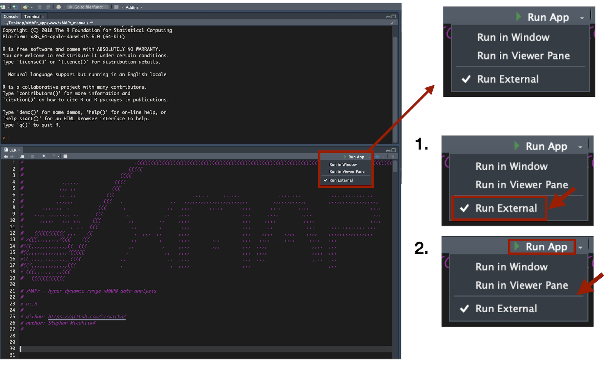

3 Installation
3.1 Download xMAPr from GitHub and run locally
3.1.1 Requirements
- R (min. version 3.5.1) https://cran.r-project.org
- RStudio Desktop (min. version 1.1.414) https://www.rstudio.com/products/rstudio-desktop/
- Windows user MUST install RTools https://cran.r-project.org/bin/windows/Rtools/ on C: drive (final path: C:\RTools)
other demanding R packages will be installed on the first startup of the xMAPr app (this might take a while)
3.1.2 Running the app locally1
- download the app from github https://github.com/stemicha/xMAPr_app by using the clone or download button
- after extracting the zip file please open the ui.R or server.R in RStudio
- select Run external
- press Run App to start the app (first run will take a while, due to package installations)

xMAPr app perform best with Firefox or Chrome web browser↩